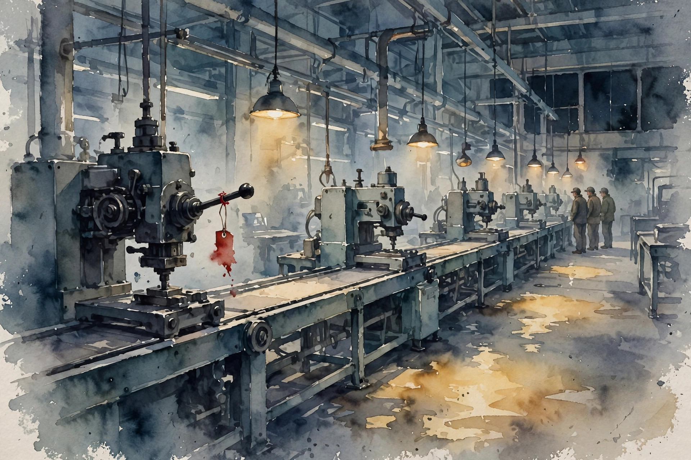
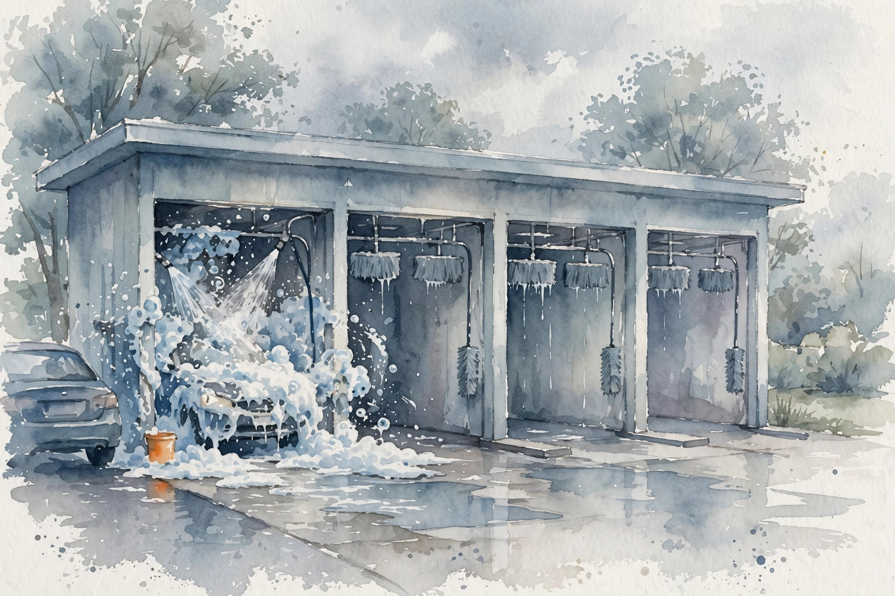

A model too big for one GPU has to be cut apart. How you cut it decides who talks to whom, who waits for whom, and who gets the bill when a machine dies.
From the lesson Illustration companion
Tags mark every claim. From the lesson restates a lesson fact in new words. Illustration is a toy or image that demonstrates it. companion is this page's own explanation or opinion.
Provenance: no transcript exists for this unit. Claim class is PLANNED / SOURCE ATTRIBUTION PENDING. Calendar anchors: Week 7 Oct 25 "Parallelism Fundamentals" (presented by Azalia), Oct 30 guest talk by Deepak Narayanan on parallelism, Nov 15 "Parallelism", Nov 18 "Cluster Scheduling". All cluster numbers are the lesson's own toys, recomputed here, not vendor benchmarks.

Chapter plate. Split the model. Mind the wire. Price the risk.
The model is 10B parameters in fp16: 20 GB. One GPU holds 40 GB, and the job has 8 of them. Four cuts are on the table. Data parallel keeps 8 full copies and feeds each different data: 20 GB per GPU. Tensor parallel slices every layer 8 ways so each GPU owns a piece of every matmul: 2.5 GB per GPU. Pipeline parallel cuts the model into 8 stages, each GPU owning whole layers: 2.5 GB per stage. Expert parallel gives each GPU whole experts and moves the tokens instead: 2.5 GB per GPU of experts plus dispatch.
The last three tie on memory at 2.5 GB each, and they differ on the bill. Tensor pays in collectives (C02), pipeline in bubbles (C05), expert in dispatch (unit 08). companion The split is free to choose once, but its tax is charged every single step.
Split lab. Illustration Set the model size and GPU count. The lab shows what each GPU holds under each split, no optimizer state.
Default: the lesson toy, 10B params on 8 GPUs.
The memory is the same, but the tax is not.
Data parallel must average 8 gradient copies every step. Ring all-reduce runs a bucket brigade around the circle: every GPU hands its chunk to its neighbor, looping twice, first for reduce-scatter, then for all-gather. The time is 2(n-1)/n x S/BW. The leading 2 counts the two loops, and (n-1)/n is the ring's efficiency.
On the toy, S = 20 GB of gradients, n = 8, link 100 GB/s (a labeled toy), giving 1.75 x 0.2 = 0.35 s per sync. Against 2 s steps the sync eats 17.5% of the step. That is the data-parallel tax. Halve the bytes with fp16 gradients and the sync halves too, to 0.175 s. At n = 64 the factor is 2 x 63/64 = 1.97, barely worse per byte, so the ring scales on bytes. The pain at 64 is latency across 126 hops rather than bytes. companion The byte term scales. The hop term does not.
The ring scales in bytes, not in hops.
Think of one node as a district with quick local roads and the cluster as a metro with sluggish arterials between districts. A collective that stays inside its district flies. One that travels between districts crawls. The toy wires: intra-node 600 GB/s, inter-node 50 GB/s, both labeled toys, not specs.
All-reduce of 20 GB inside one node gives 1.75 x 20/600 = 0.058 s. Spread 4+4 across two nodes and the ring must use the thin arterial: 1.75 x 20/50 = 0.70 s, 12x slower. A TP-8 job striped across nodes pays 0.70 s per matmul sync, which kills it. A DP job with the same spread pays 0.70 s once per step and survives. The rule: keep tensor-parallel groups inside one node, and let data parallel, with its fewer and larger syncs, cross nodes. companion Placement is decided once, but the tax is paid every step.
Wire lab. Illustration Set the two link speeds and the gradient size. The lab prices the same ring in both neighborhoods.
Default: the lesson toy. Ring factor at n = 8 is 1.75.
Urban planning for bytes.
Synchronous training moves like a hiking group. One lagging GPU, an overheated chip, a noisy neighbor, a failing disk, holds everyone at the barrier. The toy: worker times [10, 10, 10, 10, 10, 10, 10, 14]. The step takes 14 s against a median of 10 s, so the straggler tax is (14-10)/10 = 40%. Seven GPUs sit idle 4 s each: 28 GPU-seconds wasted per step, 7.8 GPU-hours over 1000 steps.
Drop the straggler and the step falls to 10 s: per-GPU throughput rises 14/10 = 1.4x on 7/8 of the iron, a net win if the work rebalances. The remedy pairs detection with a response: reassign the work, replicate it, or drop the barrier and go asynchronous. Watch for the signature: step time climbing over a week with no code change means a card in the fleet runs slow. companion A barrier turns one slow worker into everyone's problem by construction.
Straggler lab. Illustration Set the healthy worker time and the slow one's time. The lab computes the step, the tax, and the waste.
Default: the lesson toy, seven at 10 s and one at 14 s.
One slow worker is a tax on all of them.
Picture a car wash with 4 stations. Early on, stations 2 through 4 stand idle waiting for the first car to reach them. Near the end, stations 1 through 3 stand idle waiting for the last car to leave. That idle span is the bubble. With p stages and m microbatches, the bubble fraction is (p-1)/(m+p-1).
Toy: p = 4, m = 8, each microbatch one unit per stage. Total steps 11, ideal 8, bubble 3/11 = 27.3%. Double the microbatches to 16: 3/19 = 15.8%. More cars shrink the bubble. The 1F1B schedule, one forward then one backward, keeps the same bubble with far less activation memory: the naive schedule keeps p microbatch activations per stage, 1F1B keeps about 1. If the measured bubble runs 2x the formula, some stage is uneven, likely one holding the big embedding table and running 2x the rest. companion The bubble means idle GPUs: pure waste, decided by the schedule alone.

Bubble lab. Illustration Set stages and microbatches. The lab draws the bubble fraction.
Default: the lesson toy, p = 4, m = 8, bubble 27.3%.
Fill the pipe or pay for air.
Data parallel duplicates the full state 8 times: params, gradients, optimizer states, every byte copied. ZeRO puts the 8 GPUs in one shared apartment and divides a single copy among the roommates. ZeRO-1 divides the optimizer states, ZeRO-2 adds the gradients, ZeRO-3 adds the params. The rent falls, but the chores grow, because the params have to be gathered before each use.
Toy: 10B params, Adam. Params fp16 at 2 bytes, grads fp16 at 2 bytes, Adam states fp32 master plus m plus v at 12 bytes per param, so 16 bytes per param total, 160 GB. Plain DP: 160 GB per GPU, dead on a 40 GB card. ZeRO-3: 160/8 = 20.0 GB per GPU, fits with room. The tax is an all-gather of params per layer per step. FSDP is the same idea in PyTorch form. companion Memory falls by n, while communication rises. There is no free roommate.
Share the apartment, pay for the chores.
Checkpoints are the save points in a long game. Saving constantly makes the game stutter, while saving rarely means a crash replays hours of play. The interval prices that risk. Toy: each save costs 30 s, the run is 1000 steps of 10 s, so 10,000 s total.
Saving every 100 steps: 10 saves, 300 s, 3% overhead. A crash at step 950 resumes from 900, which is 50 steps of rework, 500 s. Saving every 500 steps: 2 saves, 60 s, 0.6% overhead, but a crash at 950 replays 450 steps, or 4500 s of rework. Checkpointing is pure overhead until the crash, then it is everything. The save must also capture the data-loader state, not just the model, or resume replays data in the wrong order and the run silently diverges. companion The interval is a bet on how often you will crash.
Price the risk, not just the save.
Scheduling plays Tetris with GPUs: jobs are the falling blocks, the node is the well. Toy: one 8-GPU node, jobs needing 4, 4, 2, 2 GPUs, each 1 hour, FIFO order. Hour 1 runs jobs 1 and 2 across all 8 GPUs, no waste. Hour 2 runs jobs 3 and 4 on 4 GPUs with 4 idle. Makespan 2 h, waste 4 GPU-h.
No rigid FIFO beats that result, because the waste comes from the job sizes themselves. Backfill slides small jobs into gaps for a smarter order. Elastic jobs that can shrink would also fill hour 2's gap, so rigidity wastes. Scheduling is NP-hard in general, so the cluster runs heuristics, and the scheduler's real job is to cut waste without starving anyone. companion Some waste is the schedule's fault, and some is the job sizes' fault. Know which.
Pack the well, and blame the blocks, not the player.
Spot GPUs cost 60% less in the labeled hypothetical, though the cluster can reclaim them mid-run, so a job reboots from its last checkpoint. The discount has to cover the expected rework, which is why frequent checkpoints soften evictions. Toy: 8 GPUs, a 10 h run, checkpoints every 30 min, resume costs 5 min, preemption rate 0.1 per hour.
Expected preemptions: 0.1 x 10 = 1. Rework per eviction: up to 30 min lost plus 5 min resume = 35 min. Expected rework fraction: 35/600 = 5.8%. A 60% discount dwarfs 5.8%: spot wins by a mile. At 2 total preemptions the rework is 11.7%, still under the discount. At rate 2 per hour, 20 preemptions, rework is 20 x 35/600 = 116.7%: spot loses. companion The rule is one inequality: take spot when the discount exceeds the expected rework.
Honesty note: a lesson inconsistency. companion The lesson's computed example says "at 2 preemptions/hr the rework (11.7%) still beats the discount". Recomputation: 2/hr over a 10 h run is 20 preemptions, and 20 x 35/600 = 116.7%, which loses to the 60% discount. The 11.7% figure matches 2 total preemptions, i.e. rate 0.2/hr, not 2/hr. The lesson's own derivation section agrees with the 116.7% (companion paraphrase of the rate-2/hr derivation). This page uses the corrected reading.
Spot lab. Illustration Set the eviction rate. The lab compares expected rework against the 60% discount for the 10 h run.
Default: the lesson toy, 0.1/hr, 5.8% rework vs 60% discount.
Discounts are priced against rework.
Two users share a cluster of 8 GPUs and 64 GB RAM. User A asks for (4 GPUs, 16 GB), and user B asks for (2 GPUs, 32 GB). Dominant Resource Fairness scores each user on the resource they demand most heavily, in relative terms. A lands at max(4/8, 16/64) = max(0.5, 0.25) = 0.5, bound by GPUs. B lands at max(2/8, 32/64) = max(0.25, 0.5) = 0.5, bound by RAM. Equal scores mean a fair split.
Now user C asks for (8 GPUs, 8 GB): dominant score max(1.0, 0.125) = 1.0. C alone saturates the GPUs, leaving A and B waiting. Max-min fairness over the dominant scores settles the split. The failure mode is dishonest demand: a user inflates a RAM request to push their dominant score up and pocket more GPUs. Strategy-proofness fails in practice. companion Fairness is defined on each user's bottleneck, not on raw units.
Judge each user by their own bottleneck.
The GPUs report 100% busy. Are they doing useful work? Utilization has two faces: busy means not idle, and useful means the FLOPs advance the goal. Model FLOPs Utilization = achieved / peak. Toy: 150 TFLOP/s achieved against a labeled 312 TFLOP/s peak gives MFU 48.1%.
The missing 52% adds up every tax in this unit: collectives (C02), bubbles (C05), stragglers (C04), and dispatch (unit 08). MFU is the scoreboard. This unit is the playbook that raises it. Kill the 27% bubble and MFU climbs toward 48/(1-0.27) = 65.8%, if nothing else binds. The trap is this: recomputation inflates the FLOP count while slowing the run, so MFU rises as time-to-loss falls. Busy percent alone never tells the story. companion MFU measures useful work against the ceiling rather than motion against the clock.
Busy is not useful.
One GPU fails every 3 years. What about 256 of them? A fleet fails like a chain of 256 links, where one broken link stops the run. Cluster MTBF = per-GPU MTBF / GPU count. Per-GPU: 3 years = 26,280 hours. Cluster: 26,280/256 = 102.7 hours = 4.28 days. A 30-day run expects about 7 failures.
Each failure costs resume plus rework, about 35 min each with 30-min checkpoints. Seven failures: ~4 hours of a 720-hour run, 0.6%. At 4096 GPUs the MTBF is 6.4 hours and checkpointing dominates the design. This is why C07 exists: at scale, recovery stops being exceptional and becomes the schedule itself. The formula assumes independent failures, but a rack power event taking 32 GPUs at once is correlated, and the math understates the pain. companion At 256 GPUs, failure is a line item rather than an emergency.
At scale, recovery is routine.
The unit reads as a stack. Split the model (C01), knowing each split's tax. Price the collectives the split creates (C02) on the wires you actually have (C03). Expect one slow worker (C04) and idle stages (C05) to eat the gains. Shard the states (C06) so the job fits at all. Then run the cluster: save often enough (C07), pack the queue (C08), price the spot discount (C09), split fairly (C10), and read the scoreboard (C11) while planning for the next failure (C12).
The through-line is simple: every decision in this unit is arithmetic with a tax. The numbers are small toys, yet the shape of each trade is the shape you will meet on real iron. MFU is the scoreboard, and everything else is the playbook that raises it.